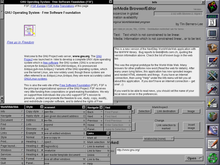

WorldWideWeb (WEB) is the first web browser and web page editor. It was discontinued in 1994. It was the first WYSIWYG HTML editor. The source code was released into the public domain on 30 April 1993. Some of the code still resides on Tim Berners-Lee's NeXT Computer in the CERN museum and has not been recovered due to the computer's status as a historical artifact.

To coincide with the 20th anniversary of the research center giving the web to the world, a project began in 2013 at CERN to preserve this original hardware and software associated with the birth of the Web.